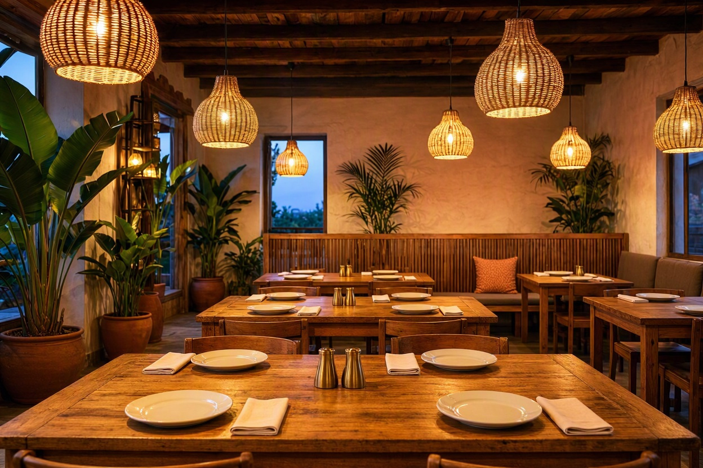

Depuis 2008 · Cocody, Abidjan
La cuisine de chez nous,
au feu de bois.
Recettes de famille, produits du marché du matin, braise allumée dès midi. À table, à emporter ou livré chez vous.
- 4,9/5600 avis
- 30–45 minlivraison à Cocody
- 11 h – 23 h7 jours sur 7
Les incontournables
Nos plats signature
Préparé à la commande
La carte
La maison
Trois générations derrière les fourneaux
Nos recettes viennent du village, transmises de mère en fille. Le poulet marine douze heures, le poisson arrive le matin même, l’attiéké est roulé à la main.
Un cadre simple et chaleureux, pour un déjeuner rapide comme pour un repas de fête — et la même cuisine, livrée chez vous.
- 18 ans
- d’ouverture
- 60
- couverts
- 4,9/5
- sur 600 avis
Réservation
Votre table vous attend
Choisissez le jour, l’heure et le nombre de couverts : la demande part sur WhatsApp, nous confirmons dans l’heure. Anniversaire, repas d’affaires : dites-le, on s’en occupe.
- Salle climatisée et terrasse
- Groupes jusqu’à 30 personnes
- Gâteau et décoration sur demande
4,9/5 sur 600 avis
Ils sont venus, ils reviennent
Le meilleur kedjenou du quartier, et un accueil comme à la maison.
Commandé à 19 h, livré à 19 h 40, encore chaud. Le capitaine est énorme.
Nous y fêtons tous nos anniversaires. Service rapide, portions généreuses.
Infos pratiques
Nous trouver
Rue des Jardins, Cocody — Abidjan
À 2 minutes du carrefour de la Vie
Horaires
Livraison de 11 h 30 à 22 h 30 · dernière commande 30 min avant la fermeture.
Livraison
Livraison offerte dès de commande.